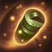
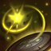
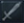
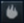
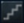

PUBLICIDAD
- 
- 
Campanas Ancestrales:
La presencia de Bardo hace aparecer unas campanas sagradas en los Campos de la Justicia. Cada campana que recoge le proporciona una breve bonificación de Velocidad de Movimiento, experiencia y Maná.Meeps:
La presencia de Bardo atrae a unos pequeños espíritus conocidos como ''meeps''. Cada vez que Bardo ataca, uno de ellos arremete contra el objetivo y le causa daño adicional antes de regresar al mundo espiritual. Cuantas más campanas recoge Bardo, más poderosos y numerosos son los meeps que lo siguen.
Cadenas Cósmicas:
Bardo lanza un rayo de energía espiritual en línea recta, que daña y ralentiza al primer objetivo al que alcanza. A continuación, la energía de Cadenas Cósmicas sigue su camino en busca de más objetivos. Si alcanza un muro, aturde al objetivo inicial. Si alcanza a un segundo objetivo, a ambos.Santuario del Guardián:
Bardo conjura un paquete de Vida que va ganando poder durante varios segundos. Los campeones aliados que pasan sobre él recuperan Vida y ganan Velocidad de Movimiento adicional durante unos instantes. Por su parte, los enemigos pueden destruirlo permaneciendo un momento encima.
Periplo Mágico
Bardo conjura un portal en un muro. Los túneles del portal, de un solo sentido, permiten cruzar el muro a cualquiera que entre en el portal, sea amigo o enemigo.
Así quedaría más o menos :)



NOVEDADES
GUIAS